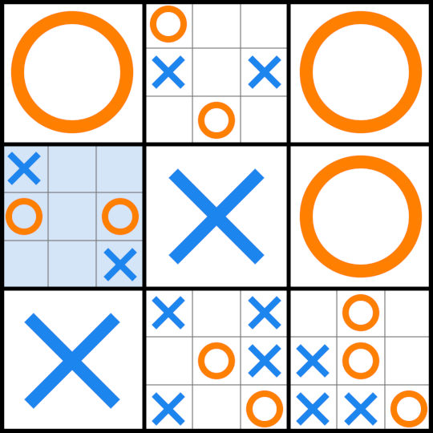

© 2019 Max Khrapov
Licensed under the Apache License, Version 2.0 (the "License")
https://www.apache.org/licenses/LICENSE-2.0
https://www.tictactoeultimatum.com/
https://github.com/mkhrapov/tictactoe-ultimatum
TicTacToe Ultimatum iOS app implements the game of Ultimate Tic-Tac-Toe, an expanded version of the classic game of Tic-Tac-Toe. The rules are standard rules of Ultimate Tic-Tac-Toe. The game is played on a 9x9 grid of cells that is further subdivided into nine 3x3 sections.
First player (Crosses) plays by placing crosses (X) on the board. Second player (Noughts) places noughts (O) on the board. To be considerate to our friends with color blindness, the crosses and noughts are colored in blue and yellow-orange, colors friendly to color-blind people.
For the Crosses first move the board is wide open and Crosses can place an X anywhere. The app helpfully highlights the legal moves in the lighter version of the player's color, so at the beginning of the game, the entire board is highlighted in light blue color.
Subsequent moves must be made in the section determined by the opponent's previous move. For example, Crosses places the first cross in the central section, top left cell. Now Noughts must play in the top left section of the board. To help bring attention to this fact, the iOS app highlights the top left section in light orange color.
Let's say, further, Noughts plays in the top left section top right cell. Now Crosses must play in the top right section of the board. The app will highlight this section with light blue color. Furthermore, notice how the most recent move is also highlighted. This is especially useful when playing against the AI.
To win a section
Consider the board on the picture below. Crosses has just played in top left section, middle right cell. You can see the background of this cell is highlighted in light blue. Now Noughts must play in the middle right section. This entire section is highlighted in light orange.
If Noughts plays in the left bottom cell of its section, Noughts will have noughts in 3 cells in this section arranged in a vertical row. Top left, middle left, and bottom left. This wins this section for Noughts. Instead of a play board there will be one big orange Noughts displayed in this section to indicate that this section has been won by Noughts. No player may place marks there anymore. The board will look as shown in the picture below. Notice that Crosses must play in the bottom left section.
Wildcard play
Consider the board below. The Crosses is about to play in the middle left section, in the central cell. This would normally require Noughts to play in the central section of the board. But in this game the central section has already been won and no further play is possible.

What happens in this case is wildcard play. Noughts cannot play in the section they would normally be required to play in, so they get the right to play in any section that has not been filled or won yet. The board will look like this.
To win the entire game
Now Noughts have an option to play in the bottom right section, top left cell. This move will win that section for Noughts, because they will have 3 noughts in a diagonal row in this section: top left, center, bottom right. And now that this section has been won, Noughts will have 3 sections in a vertical row that they have won. Top right section, middle right section, and this bottom right section. This wins the entire game for Noughts. The board will look as shown below.